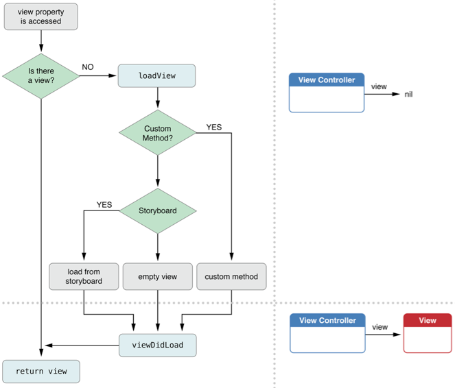

ViewController 的职责主要包括管理内部各个view的加载显示和卸载，同时负责与其他ViewController的通信和协调。
IOS主要有两类ViewController，一类用于显示内容，如UIViewController、UITableViewController等，另一类是导航型的，如UINavigationViewController、UITabBarController等。
每个控制器都有其生命周期，一个控制器的生命周期开始与创建时刻，多个控制器的切换将调用控制器中的一些列相关方法。
初始化方法init
1.加载xib文件
- (id)initWithNibName:(NSString )nibNameOrNil bundle:(NSBundle )nibBundleOrNil;
2.从storyboard中加载
- (id)initWithCoder:(NSCoder *)aDecoder
loadView
该方法在xib或storyboard中加载view时调用。
viewDidLoad
viewDidLoad算是最常用到的一个方法，在loadView后调用，已经完成实例化和outlet的设置（此时可以设置outlet显示等），基本上是用来进行一些初始化操作。该方法只调用一次
1 |
|
但是当执行viewDidLoad后，视图的边界还没有确定下来，所以不要在其中添加与几何相关，视图形状的初始化的代码。
viewWillAppear、viewDidAppear
viewWillAppear是view即将显示，每次视图重新在屏幕上显示时，都会调用viewWillAppear；而viewDidAppear则是view已经加载至屏幕上。
一次性初始化的任务不要放在viewWillAppear中，因为这是属于viewDidLoad，多个视图来回切换的话会重复进行初始化操作。
viewWillAppear适合对不可见时可能改变的内容数据进行同步。
viewWillAppear执行时视图的边界已经确定下来，可以进行图形几何相关的设置。
viewWillLayoutSubviews、viewDidLayoutSubviews
这个方法更适合添加几何相关的代码。大多数的控件会通过自动布局放置在合适的地方。
该方法通常在视图的frame改变时调用，最常见的一种情况是autorotation（旋转屏幕）。
View的加载

View的卸载